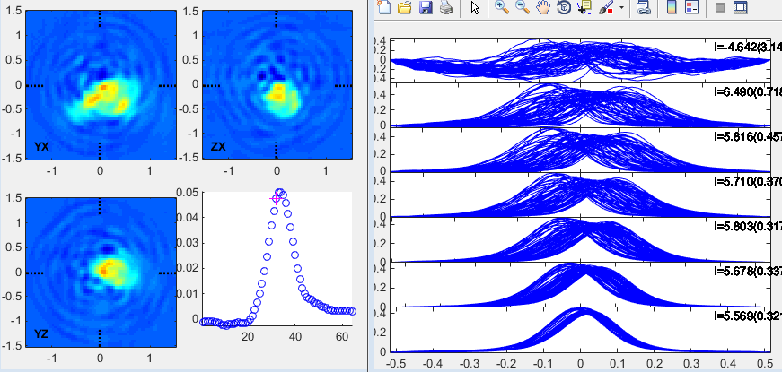

| EPR Imaging Toolbox collection user manual |
Dataset 4 CW spectral-spatial EPR image of tumor bearing leg of a mouse OX063 spin probe.  Example: % load projections s = open([' path to sample data ','\prjData4.mat']); FBP.nSpec = 14; FBP.imtype = 1; FBP.baseline = 'none'; FBP.nPolar = 10; FBP.nAz = 10; FBP.projection_order = 'asis'; FBP.angle_sampling = 'uniform_spatial_flip'; FBP.swDefCode = 0; FBP.scanMethod = 9; FBP.Npt = 256; FBP.MaxGradient = 3.0296; [pars,pars_ext] = iradon_FBPGradTable(FBP); radon_pars.nBins = 64; radon_pars.size = 4; rec_y = zeros(radon_pars.nBins, size(s.P, 3)); % determine image dimensions ReconSweep = pars.UnitSweep; cos_alpha = cos(pars_ext.alpha); ndata = size(s.P, 1); for ii=1:pars.nSpec % select data for particular spectral angle idxSpec = pars_ext.k == ii; nSpecPrj = numel(find(idxSpec)); cos_sweep = mean(cos_alpha(idxSpec)); sweep = mean(ReconSweep(idxSpec)); % integrate data data4sweep = cumsum(s.P(:, idxSpec), 1) * sweep/ndata; x_ss_scan = linspace(-sweep/2, sweep/2, ndata); x_ss_sw = linspace(-sweep/2, sweep/2, radon_pars.nBins); % interpolate trace to get correct number of points and % normalize spectral intensity rec_y(:, idxSpec) = interp1(x_ss_scan, data4sweep, x_ss_sw, 'pchip', 0) / cos_sweep; end mat = zeros([radon_pars.nBins, prod(pars.Dim)]); mat(:,pars.gidx) = real(single(rec_y)); PP = reshape(mat, [radon_pars.nBins, pars.Dim]); % convert uniform solid angle sampling into uniform linear angle sampling switch upper(FBP.angle_sampling) case {'UNIFORM_SPATIAL','UNIFORM_SPATIAL_FLIP'} Pela=iradon_InterpToUniformAngle(PP,'imgData'); end radon_pars.ELA = FBP; recon_pars.size = 4; % ignored, radon_pars.size is used instead recon_pars.nBins = 64; % ignored, radon_pars.nBins is used instead recon_pars.Filter = 'ram-lak'; recon_pars.FilterCutOff = 0.5; recon_pars.Interpolation = 'spline'; recon_pars.InterpFactor = 4; recon_pars.CodeFlag = 'MATLAB'; recon_pars.zeropadding = 1; % any number >= 1 % call the reconstruction program and display result image = iradon_d2d_mstage(Pela, radon_pars, recon_pars); ibGUI(image); Legend: EPR-IT functions; MATLAB functions; comments. |